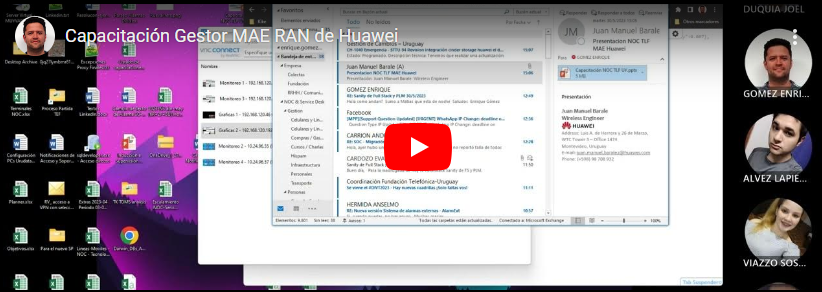

Capacitación Gestor MAE RAN de Huawei
Monitoreando la Red Metro (MPLS) via Nokia NFM-P y la Red IP via SNMPc y Cisco Prime
Como abrir todos los gestores en el panel de monitoreo
Como Reconocer y Cerrar múltiples alarmas en Zabbix
Conceptos básicos de Red de Acceso (Parte 1)
Conceptos básicos de Red de Acceso (Parte 2)
Capacitación en Transmisión
Capacitación Gestor ENM Ericsson
Inducción a Supervisión de Red - Dia 1: Presentación General
Inducción a Supervisión de Red - Dia 2: Conceptos Técnicos
Inducción a Supervisión de Red - Dia 3: Operativa General
Inducción a Supervisión de Red - Dia 4: Operativa General
Inducción a Supervisión de Red - Dia 5: Operativa General